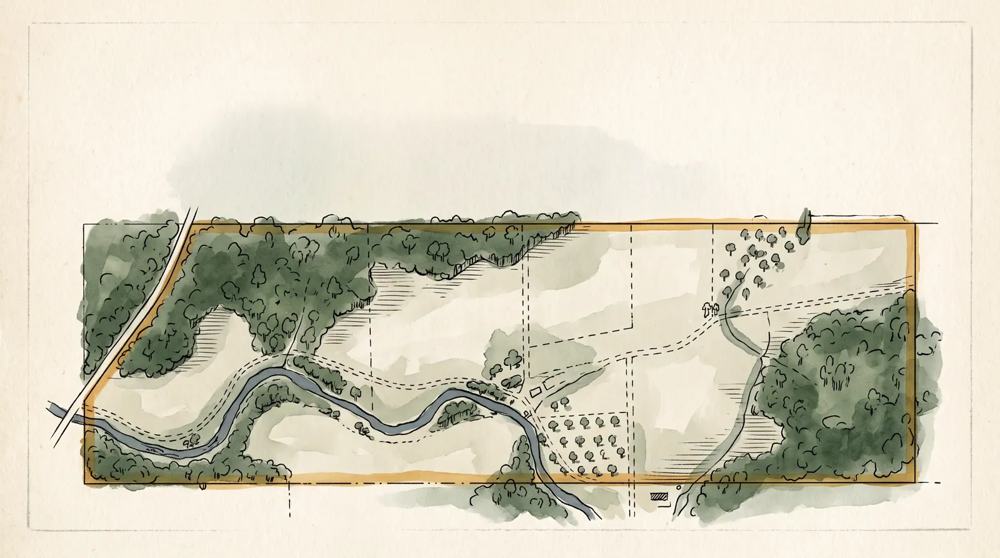
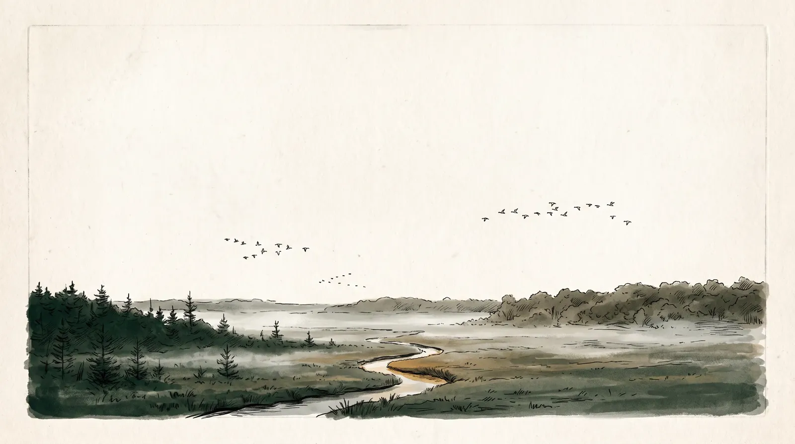
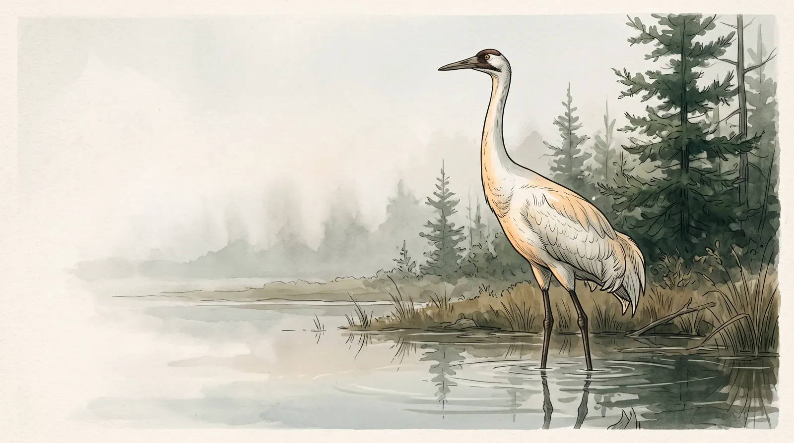
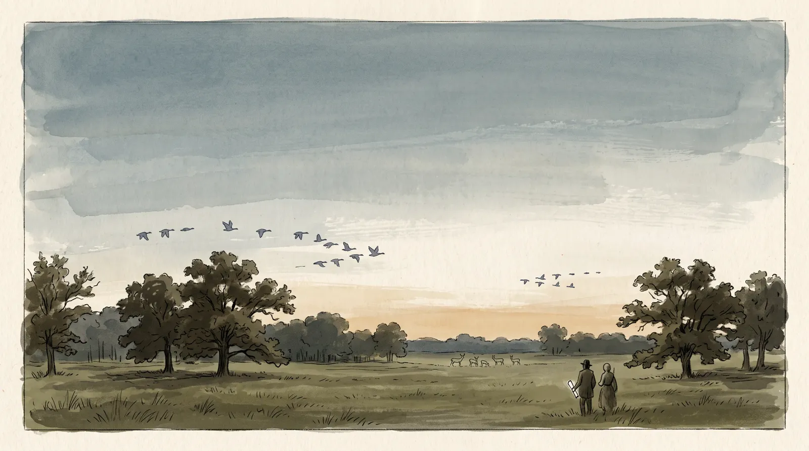

WildDeed · Parcel Wildlife Dossier
A naturalist's background check for any piece of land.
Every US parcel has a wildlife record. We find it, read it, and hand you the dossier in three minutes.

Chapter I
The land you are about to buy has a file.

Before you sign anything, the birds, game, and rare species around that parcel have already been counted, by thousands of field observers, for decades.
Take one real parcel in central Wisconsin. Within eight kilometers of its fence line: 92,840 wildlife observations across 518 species, logged between 2011 and 2026 by birders, biologists, and hunters with phones.
That file exists for nearly every parcel in the country. Nobody reads it. We do.
Chapter II
The seller says the hunting is excellent. Who checked?
Listing photos show the food plot, not the population. The agent's brochure says "abundant whitetail," and it might be true, but it is marketing copy written by the person whose commission depends on the sale.
Land is a five and six figure purchase decided on vibes and a walk in August, when half the species that matter are elsewhere.
A wildlife dossier does not tell you what to buy. It tells you what the record actually says, so the decision is yours, informed.
Chapter III
What a dossier holds.
Seven pages, plain English, one parcel. Written by an AI naturalist from the occurrence data, never around it.


An executive verdict in plain English. Habitat and landscape context. Flagship species with observation counts and last seen years. A game and harvest section that is the reason brokers keep these on file. Conservation notes with the uncomfortable parts left in.
And a data appendix: sources, radius, record counts, freshness, and an explicit note that this is not a biological survey. Honesty is the product.
Chapter IV

Seven whooping crane records, inside the radius.
Grus americana. Endangered, federally protected, roughly six hundred alive in the wild. The sample parcel's dossier carries seven recent records, because its wetlands sit under a migration corridor nobody mentioned in the listing.
- 42Bald eagle records, last seen 2026
- 39White-tailed deer records
- 7Whooping crane records, endangered
Chapter V
Where the numbers come from.
- GBIF. The Global Biodiversity Information Facility, the scientific record of every museum specimen, birder checklist, and agency survey. 92,840 records pulled for the sample parcel alone.
- The IUCN Red List. Conservation status for every flagship species, from Least Concern to Endangered, as a badge on the page.
- An AI naturalist that cannot invent. The narrative is generated from the structured data, then validated: every species name in the prose must appear in the source records or the build fails.
- An honest appendix. Radius, date window, record counts, and the disclaimer, on every report. Not a biological survey. A reading of the public record.
Colophon
Three minutes from address to dossier. Order a dossier and read your land the way a naturalist would.

WildDeed dossiers are generated from public biodiversity records (GBIF) and IUCN conservation data. Not a biological survey; not a guarantee of species presence. For land-use decisions, consult a licensed biologist.
Sample parcel: Wood County, Wisconsin. 8 km radius, records 2011 to 2026. Bald eagle 42 · Whitetail 39 · Wood duck 28 · Whooping crane 7 (endangered).